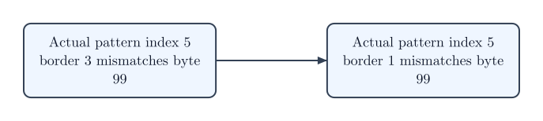
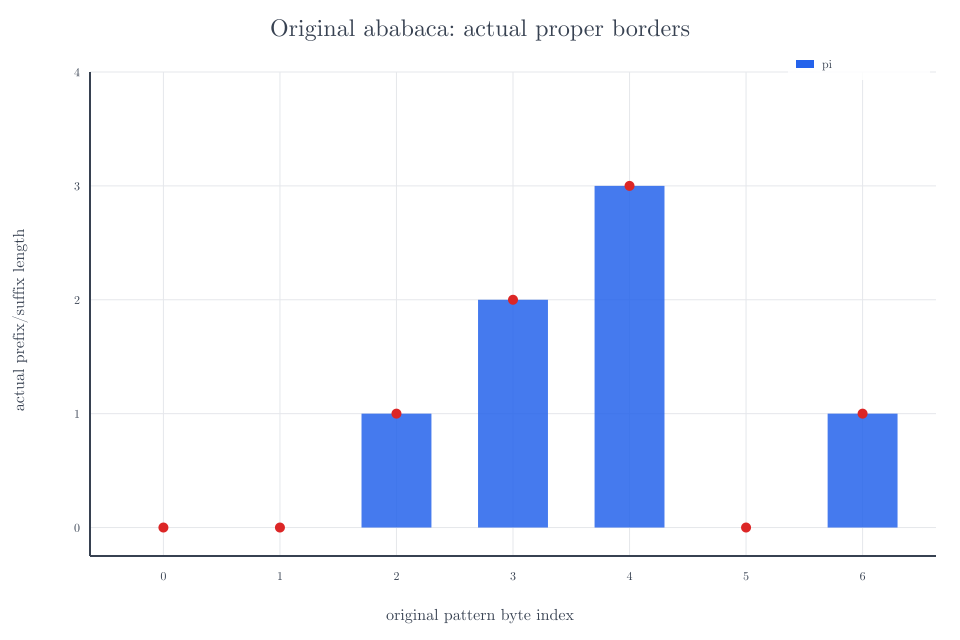
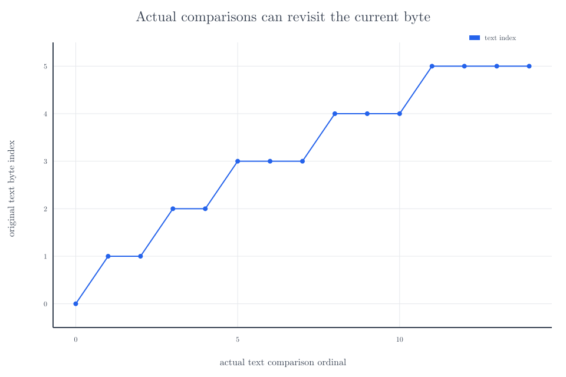
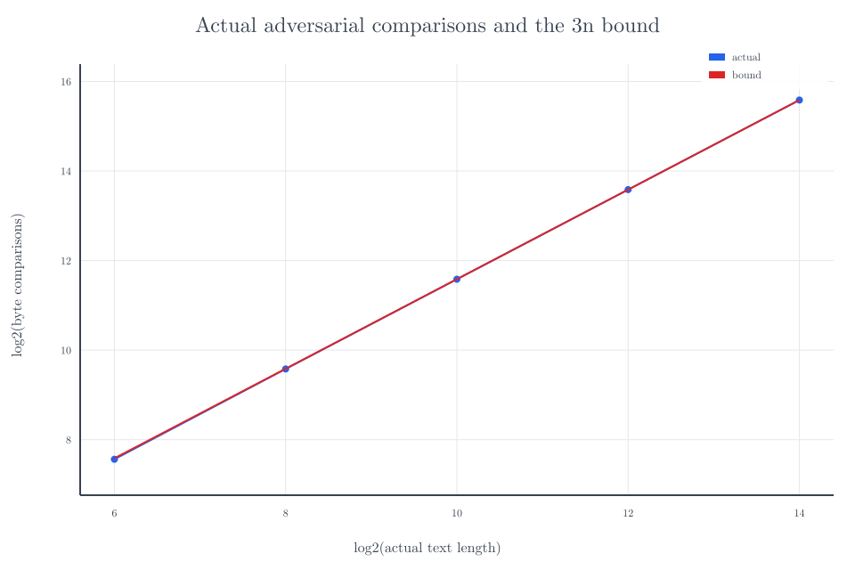

KMP matching through actual byte comparisons
Abstract
Exact matching must find every occurrence of a byte pattern in a text, including overlaps, without rescanning the text from each candidate start. KMP reuses the pattern’s own prefix/suffix structure to preserve earlier evidence after a mismatch. We retain the original ababaca prefix example and both original searches, inspect actual producing comparison operands, and measure a linear selected-work bound on repetitive adversarial inputs. Empty-needle and embedded-NUL controls state the byte-level contract explicitly.
Borders explain the fallback
For a pattern P, pi[i] is the largest proper-prefix length that is also a suffix of P[0..i]. “Proper” means pi[i]<=i; pi[0]=0. After matching q bytes, a mismatch can only preserve a border of that matched prefix: replace q by pi[q−1], repeating until extension succeeds or q reaches zero. Text position never decreases, though the same byte can be compared more than once.
The native implementation deliberately retains its original while-then-if order. A positive-border while test compares bytes even when equal; the following extension if can test that same equal pair again. Counters and records count both actual comparisons. A full match resets q to its longest border so overlapping occurrences survive. Bytes are compared exactly, without Unicode normalization or code-point interpretation. The historical empty-pattern convention is no matches, and a pattern longer than text exits before constructing pi.
See the original failure links
For ababaca the prefix table is0,0,1,2,3,0,1. At position5 the new c cannot extend either the three-byte or one-byte border. The diagram uses actual prefix-phase while-mismatch records produced during a complete search, not a separately simulated automaton.
#include <dm/dm.hpp>
int main() {
std::filesystem::create_directories("build");
const auto t =
dm::algorithms::kmp_search_trace("ababacaababaca", "ababaca");
dm::graphics::Diagram d;
std::size_t count = 0;
std::print("| actual pattern index | tested border | source byte | pattern byte | equality |\n| ---: | " "---: | ---: | ---: | --- |\n");
for (const auto &e : t.comparisons)
if (e.phase == dm::algorithms::KMPPhase::Prefix &&
e.site == dm::algorithms::KMPSite::While && !e.equal) {
std::print("| {} | {} | {} | {} | {} |\n", e.index, e.border,
unsigned(e.source_byte), unsigned(e.pattern_byte),
e.equal);
const auto id = std::to_string(count);
d.node(id, {double(count) * 6, 0},
std::format("Actual pattern index {}\nborder {} mismatches byte {}",
e.index, e.border, unsigned(e.source_byte)));
if (count)
d.edge(std::to_string(count - 1), id);
++count;
}
std::print("\nActual prefix comparisons {}; actual prefix fallbacks {}.\n",
t.work.prefix_comparisons, t.work.prefix_fallbacks);
d.save_svg("build/kmp_fallback.svg");
}| actual pattern index | tested border | source byte | pattern byte | equality |
|---|---|---|---|---|
| 5 | 3 | 99 | 98 | false |
| 5 | 1 | 99 | 98 | false |
Actual prefix comparisons 10; actual prefix fallbacks 2.

Original prefix table and both original searches
The two complete searches use ababacaababaca with needle ababaca, and ababababa with needle aba. The first has starts0 and7; the second preserves overlaps at0,2,4,6. Reported starts are original byte offsets. Prefix construction is part of each actual search’s selected work; the standalone prefix API returns the same table on a nonempty valid search.
#include <dm/dm.hpp>
int main() {
std::filesystem::create_directories("build");
const std::string pattern = "ababaca";
const auto pi = dm::algorithms::kmp_prefix_function(pattern);
std::vector<double> x, y;
std::print("| original pattern index | byte | actual prefix length |\n| ---: | ---: | ---: |\n");
for (std::size_t i = 0; i < pi.size(); ++i) {
std::print("| {} | {} | {} |\n", i, pattern[i], pi[i]);
x.push_back(i);
y.push_back(pi[i]);
}
std::print("\n| original text | original needle | actual match start |\n| --- | --- | ---: |\n");
for (const auto & [text, needle] : std::vector<std::pair<std::string, std::string>> {
{ "ababacaababaca", "ababaca" }, {"ababababa", "aba"}
}) {
const auto t = dm::algorithms::kmp_search_trace(text, needle);
for (auto i : t.matches)
std::print("| {} | {} | {} |\n", text, needle, i);
}
auto p = dm::graphics::RPlot::create();
p.bars(x, y, "pi", {37, 99, 235}, .6).points(x, y, "", {220, 38, 38}, 5).y_limits(-.25, 4).title("Original ababaca: actual proper borders").x_label("original pattern byte index").y_label("actual prefix/suffix length").save_svg("build/kmp_original.svg");
}| original pattern index | byte | actual prefix length |
|---|---|---|
| 0 | a | 0 |
| 1 | b | 0 |
| 2 | a | 1 |
| 3 | b | 2 |
| 4 | a | 3 |
| 5 | c | 0 |
| 6 | a | 1 |
| original text | original needle | actual match start |
|---|---|---|
| ababacaababaca | ababaca | 0 |
| ababacaababaca | ababaca | 7 |
| ababababa | aba | 0 |
| ababababa | aba | 2 |
| ababababa | aba | 4 |
| ababababa | aba | 6 |

Repeated comparisons and binary controls
A repeated text position is legitimate: fallback changes the candidate border while preserving the current text byte. The plot shows actual original text indices against text-phase comparison ordinal. This separates “the text cursor never rewinds” from the false claim that each byte is tested exactly once. Embedded NUL is an ordinary byte, and an empty needle follows the library’s deliberate no-match convention.
#include <dm/dm.hpp>
int main() {
std::filesystem::create_directories("build");
const auto t = dm::algorithms::kmp_search_trace("aaaaac", "aaab");
std::vector<double> x, y;
std::print("| actual text test ordinal | original text index | tested border | equality | while site " "|\n| ---: | ---: | ---: | --- | --- |\n");
for (const auto &e : t.comparisons)
if (e.phase == dm::algorithms::KMPPhase::Text) {
std::print("| {} | {} | {} | {} | {} |\n", x.size(), e.index,
e.border, e.equal,
e.site == dm::algorithms::KMPSite::While);
x.push_back(x.size());
y.push_back(e.index);
}
std::print("\n| control | actual occurrences |\n| --- | ---: |\n");
std::print("| empty needle | {} |\n",
dm::algorithms::kmp_search("abc", "").size());
std::print("| longer needle | {} |\n",
dm::algorithms::kmp_search("a", "aaa").size());
std::print("| embedded NUL overlap | {} |\n",
dm::algorithms::kmp_search(std::string("a\0a\0a", 5),
std::string("a\0a", 3)).size());
auto p = dm::graphics::RPlot::create();
p.line(x, y, "text index", {37, 99, 235}, 2).points(x, y, "",
{37, 99, 235}, 4).title("Actual comparisons can revisit the current byte").x_label("actual text comparison ordinal").y_label("original text byte index").save_svg("build/kmp_comparisons.svg");
}| actual text test ordinal | original text index | tested border | equality | while site |
|---|---|---|---|---|
| 0 | 0 | 0 | true | false |
| 1 | 1 | 1 | true | true |
| 2 | 1 | 1 | true | false |
| 3 | 2 | 2 | true | true |
| 4 | 2 | 2 | true | false |
| 5 | 3 | 3 | false | true |
| 6 | 3 | 2 | true | true |
| 7 | 3 | 2 | true | false |
| 8 | 4 | 3 | false | true |
| 9 | 4 | 2 | true | true |
| 10 | 4 | 2 | true | false |
| 11 | 5 | 3 | false | true |
| 12 | 5 | 2 | false | true |
| 13 | 5 | 1 | false | true |
| 14 | 5 | 0 | false | false |
| control | actual occurrences |
|---|---|
| empty needle | 0 |
| longer needle | 0 |
| embedded NUL overlap | 2 |

Checking the linear work argument
Each mismatch fallback strictly decreases q, and only successful extensions increase it. At most n extensions occur in a text scan, so there are at most n mismatch fallbacks. At most one successful positive-border while test and one final extension test occur per position. Consequently text comparisons<=3n for this preserved implementation; prefix comparisons<=3(m−1) for m>0. These conservative counts exclude integer branch tests, memory traffic, allocation, output and time. Prefix construction and scanning take O(n+m) work; the table uses O(m), with O(number of matches) output. Trace mode additionally owns inputs and all actual records.
The following complete adversarial runs use text a repeated n−1 times then c, with needle a repeated31 times then b. Count-only analysis shares the same producer without storing an ever larger history. The plotted reference is the proved comparison bound, not a fabricated measured growth curve.
#include <dm/dm.hpp>
int main() {
std::filesystem::create_directories("build");
std::vector<double> x, y, b;
const std::string pattern = std::string(31, 'a') + 'b';
std::print("| actual text length | prefix comparisons | actual text comparisons | text fallbacks | " "conservative text bound | matches |\n| ---: | ---: | ---: | ---: | ---: | ---: |\n");
for (std::size_t n : {64, 256, 1024, 4096, 16384}) {
const auto a =
dm::algorithms::kmp_search_analyze(std::string(n - 1, 'a') + 'c',
pattern);
std::print("| {} | {} | {} | {} | {} | {} |\n", n,
a.work.prefix_comparisons, a.work.text_comparisons,
a.work.text_fallbacks, 3 * n, a.matches.size());
x.push_back(std::log2(n));
y.push_back(std::log2(a.work.text_comparisons));
b.push_back(std::log2(3 * n));
}
auto p = dm::graphics::RPlot::create();
p.line(x, y, "actual", {37, 99, 235}, 2).points(x, y, "", {37, 99, 235}, 4).line(x, b, "bound", {220, 38, 38}, 2).title("Actual adversarial comparisons and the 3n bound").x_label("log2(actual text length)").y_label("log2(byte comparisons)").save_svg("build/kmp_work.svg");
}| actual text length | prefix comparisons | actual text comparisons | text fallbacks | conservative text bound | matches |
|---|---|---|---|---|---|
| 64 | 90 | 189 | 63 | 192 | 0 |
| 256 | 90 | 765 | 255 | 768 | 0 |
| 1024 | 90 | 3069 | 1023 | 3072 | 0 |
| 4096 | 90 | 12285 | 4095 | 12288 | 0 |
| 16384 | 90 | 49149 | 16383 | 49152 | 0 |

Scope and verification
All matching is exact byte equality. The trace owns original strings, actual table, matches and comparison records; no second scan constructs its history. Capture admission counts complete original bytes, table entries, tests and output match identities, with a million-entry default and zero disabling only the optional quota. It excludes private runtime copies, capacities and bytes/RAM. Ordinary and count-only APIs retain no input/history and have no optional capture ceiling.
Independent naive matching and direct border enumeration checked1000 byte-string
searches and37560 actual producing comparisons, including original byte
positions and fallback order. Another1000 binary searches/prefix tables matched
the frozen implementation exactly. Native tests additionally exhaust32193 binary
text/needle pairs, preserve overlaps and verify byte/NUL/high-byte domains,
complete capture admission and owned records. The ten-report shared build
passed141 native CTest cases,45 directly instrumented
address/undefined-behaviour sanitizer cases,90 compiled/executed public
examples,412/412 scoped file definitions plus11/11 changed lagged-Fibonacci
engine definitions, and ten representative clangd hovers. All four complete
report programs executed and all four native figures were visually reviewed.
Receipts and repeatable checks are retained under
build/mepml-conversion/batch-184-193/.
References
D. E. Knuth, J. H. Morris, Jr., and V. R. Pratt(1977), Fast Pattern Matching in Strings, SIAM Journal on Computing6(2),323–350. Native while-then-if tests and empty-needle conventions are stated separately from the paper’s algorithmic complexity result.